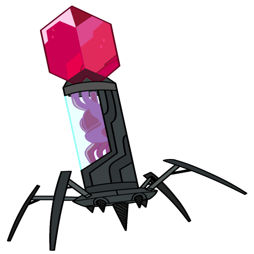
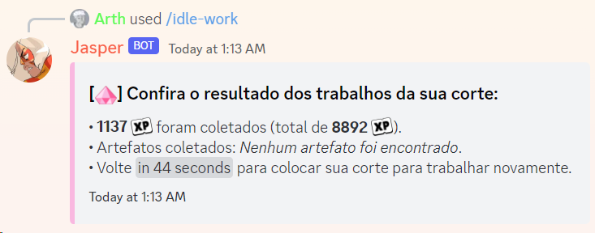
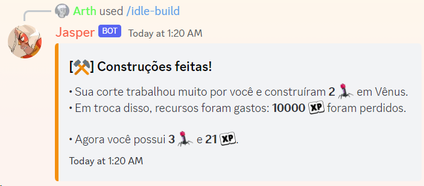
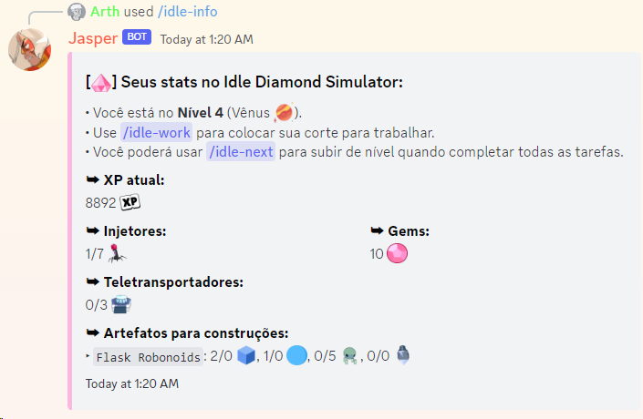
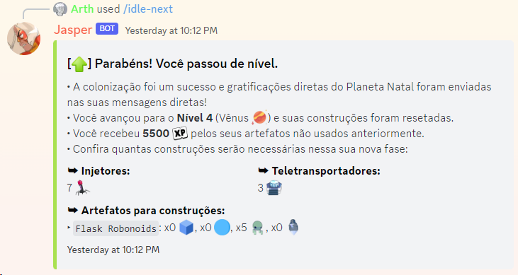

• Segue um pequeno tutorial de como começar a jogar:
1. Atualmente, o jogo possui 12 níveis, cada um representado por um planeta/satélite, e você
começa pelo 1, obviamente.
2. Para passar de nível, você deve construir injetores, teletranspotadores e construções. Cada nível exige uma quantidade diferente deles. Para construí-los,
você precisará de XP ou artefatos.
3. Use o comando /idle work para fazer as gems da sua corte trabalharem
e conseguirem XP e artefatos para você.
Artefatos não
aparecem sempre, existe uma porcentagem para cada um deles! Você pode fazer isso a cada 5 minutos. Você
começará cada nível com 10 gems na sua corte e receberá mais 10 a cada injetor construído.

4. Use o comando /idle build para construir um injetor por 5000
cada ou construir um teletranspotador por
10000
cada.

5. Use o comando /idle info para ver informações sobre seu jogo, como:
sua quantidade de XP, injetores e
teletransportadores, além de quanto recurso falta para que passe de nível.

6. Use o comando /idle next para passar de nível assim que tiver todos
os
recursos necessários. Ao passar de nível, seus recursos zeram e você precisará recomeçar o processo de
colonização do zero, uma vez que é um novo planeta,
no entanto, recompensas no bot serão enviadas a você por isso.

• Você pode usar o comando /idle help no Discord para revisitar essa mensagem!
• Espero que você se divirta! Qualquer dúvida, sinta-se livre para perguntar no meu canal de suporte.
Publicado . Dependendo da data de publicação, o texto pode estar levemente desatualizado.